Goodbye annoying issues, hello new features, improvements and even more stability!
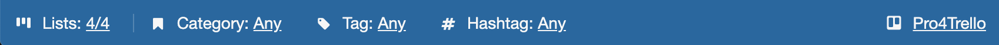
The new footer (as you're already guessing from the screenshot) hosts some new features.
Is this thing becoming an actual Trello thing or what?
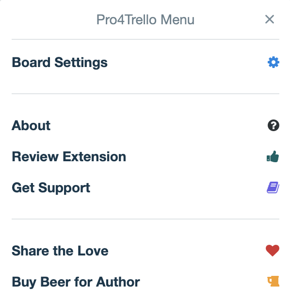
Because your Trello experience really CAN be better!
You know those huge boards with a ton of lists? Well, there's this easy option in the footer...
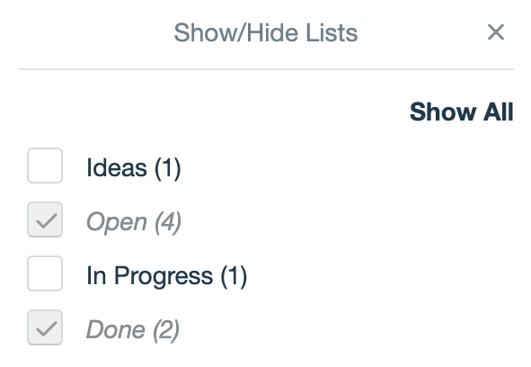
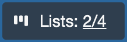
It really looks as awesome as it sounds:
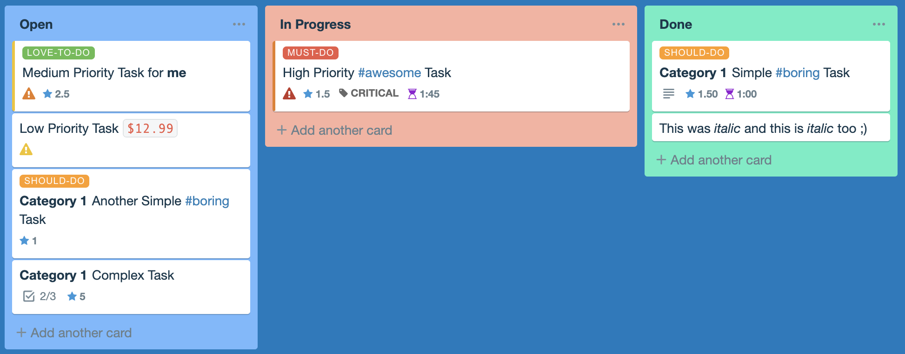
And it's supear easy to configure:
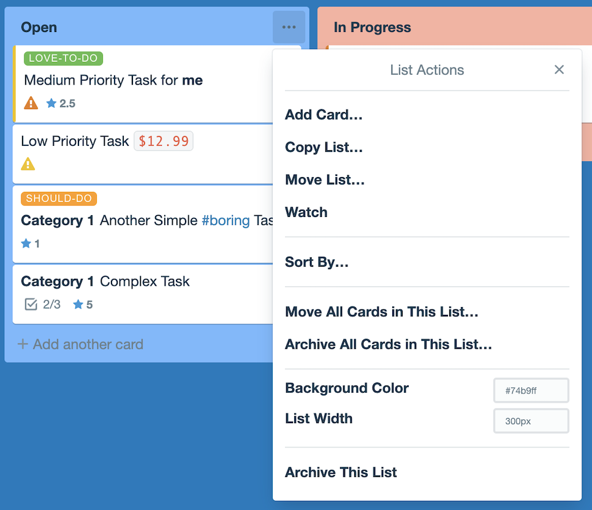
Every card enhancement you turn on will enable you to filter cards in the footer:
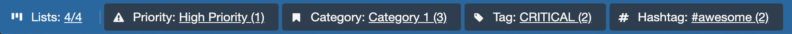
It's now super easy to share settings between boards (you're welcome teams):
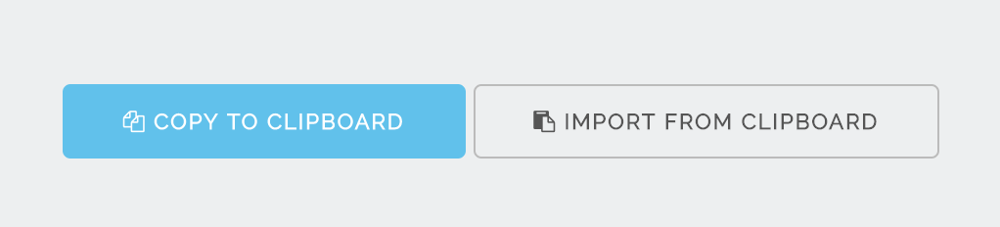
Why not having a file? This extension does not need additional permissions such as access to your file system!?
Because you are sending FANTASTIC feedback!
You can now use float numbers as points and list stats will sum them up (up to 2 decimal places).
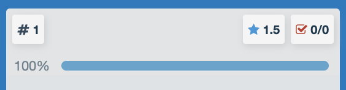
Time entries are now summed up in list stats, provided that the input makes sense (hours and minutes).
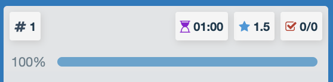
Previously you could only use *text* and now you can use _text_ as well. Always good to have options.
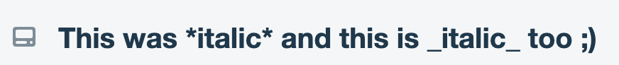
You can now filter out cards that do not have a group/category.
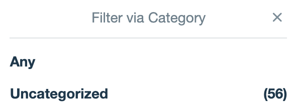
You will no longer mess up Trello's label filtering if you are using Pro4Trello filters, any of them.